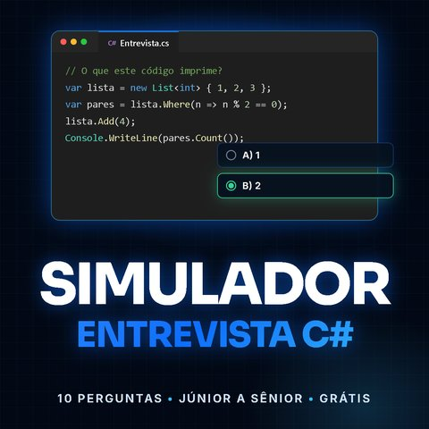

Ferramentas com créditos
Ferramentas
do site
Crie sua conta e ganhe 10 créditos para usar o Raio-X e o Simulador. Cada Raio-X consome 3 créditos e cada simulado, 1; quando acabar, você compra mais.
Consulta ATS
Raio-X do Currículo
Diz o que mudar em cada trecho do currículo, com o texto pronto para copiar, e devolve uma versão reescrita com layout profissional para exportar em PDF ou Word.
Abrir ferramenta
Entrevista técnica
Simulador de Entrevista C#
10 perguntas de múltipla escolha que caem de verdade em entrevista C# e .NET. No fim, você vê onde errou, por quê e o que o entrevistador queria ouvir.
Fazer o simulado